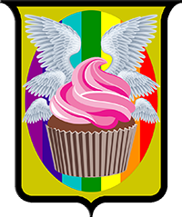

Mecânicas de Jogo
Saúde
Em crônicas de Launari sua maior preocupação são seus pontos de saúde. Aventureiros comuns se regeneram utilizando poções de vida, magias de cura ou com a ajuda de um médico e um kit médico. Isso torna os combates sequenciados muito mais perigosos, deve-se prestar muita atenção nas estratégias que quer tomar em batalha para evitar fatalidades. Um mago especializado em curas, alivia um pouco do fardo do grupo, mas ainda assim é importante se preparar para o pior.
Regeneração de Saúde
É possível regenerar um pouco de sua saúde com descansos. Para cada ponto de Vigor investido, você recupera 5 pontos de saúde em um descanso curto, se você possui 0 de vigor, você regenera apenas 5 pontos de saúde. Em um descanso longo, você regenera 10 pontos de vida para cada ponto de Vigor investido, se você possui 0 de vigor, você regenera apenas 10 pontos de saúde.
Descanso Curto e Longo
Descansos são uma maneira de seu personagem recuperar o fôlego, consumir poções e se preparar para a próxima etapa da aventura. Um descanso Curto constitui-se de 1 hora de atividades leves, que não envolvam muito esforço físico. Já um descanso Longo, constitui-se de 8 horas de repouso em atividades leves ou dormindo. Esse tempo precisa ser ininterrupto para contar como um descanso. Você pode fazer 2 descansos curtos e 1 descanso longo por dia.
Treinamento
Quando você possui treinamento com uma ferramenta, arma ou perícia, você pode adicionar na sua rolagem de ataque, uso de ferramenta ou perícia o valor correspondente ao indicado na tabela de progressão. Para todos os efeitos, se você pode equipar uma arma, logo você possui treinamento nessa arma.
Ajuda
Quando uma pessoa estiver realizando um teste de perícia, você pode ajudá-lo, dando vantagem em seu teste. Porém para que isso aconteça, você precisa ter treinamento na mesma perícia que essa pessoa está fazendo o teste. Se você possuir uma profissão que se assemelhe ao teste, você pode utilizar ajuda desta forma, porém converse com o seu mestre sobre isso para verem a viabilidade.
Turnos e Rodada
O combate em Crônicas de Launari é feito em turnos, uma vez que o combate se inicia, todos rolam suas agilidades, do maior pro menor número agirá primeiro. Quando chegar sua vez de atacar, será o seu turno, cada um possui seu próprio turno, e no final de todos eles volta-se para o primeiro, essa volta por todos os combatentes é chamada de Rodada. Para fins de cálculo de habilidades, 1 Turno possui 6 segundos em média.
Ação e Reação
No início de seu turno, você recebe 6 pontos de ação(PA) para utilizar como bem entender, ao final de seu Turno esses pontos desaparecem, tendo sido utilizados ou não. Os pontos de reação(PR) também são obtidos no início de seu Turno, você pode tomar uma reação quando houver um gatilho ou entre rodadas quando o Mestre do Jogo perguntar “Alguém quer tomar uma reação?”. Os pontos de Reação retornam sempre que se inicia uma rodada nova.
Preparar Ação
Às vezes durante um combate, você pode desejar se posicionar e esperar algo acontecer para tomar uma ação, chamamos isso de Preparação. Para preparar uma ação você precisa ter gasto no máximo 2 PA e não ter atacado, você então escolhe um gatilho para sua ação, por exemplo: “eu gostaria de tomar minha ação quando o inimigo chegar a 1m de distância”, quando o gatilho for acionado, você poderá tomar sua Ação.
Atrasar Ação
Diferente de preparar uma ação, você pode escolher atrasar sua ação, desta maneira, você espera até o final da rodada para tomar sua ação em vez de tomá-la na ordem estabelecida na agilidade. Isso ocorre apenas no turno que você declarar o atraso.
Custo
Quase todas as ações e habilidades possuem um custo, esse custo é dado pelos pontos de Ação e Reação que possui. Ao passar dos níveis você poderá adquirir habilidades que têm um custo muito alto, porém são muito poderosas, você deve administrar bem os seus pontos para poder realizar todas as ações e reações que deseja em seu turno.
Movimentação
Ao utilizar pontos de ação ou reação para se movimentar, você pode andar livremente pelo campo de batalha, quer dizer, até certo ponto. Você não consegue passar por áreas bloqueadas por inimigos, que sejam estreitas demais para comportar seu personagem ou se dois aliados estiverem à sua frente, como em um corredor estreito, por exemplo.
Ataques e Habilidades
Durante seu turno você pode atacar até duas vezes, se ainda assim você tiver pontos sobrando pode tentar utilizar uma habilidade, habilidades não contam como ataques, mas cuidado ao abusar do uso delas, elas podem causar exaustão ou sobrecarga.
Exaustão
Um alvo pode receber a condição de Exausto se ele exceder sua capacidade física, seja por atividades extensivas, clima ou combate, testes de Exaustão serão pedidos. São 6 níveis de exaustão cumulativa, para remover um nível de exaustão, o personagem deverá finalizar um descanso longo ou utilizar a magia correspondente. Os efeitos por nível são os seguintes:
• Menos 5 pontos de saúde para cada nível de exaustão;
• Menos 1 em acertos e perícias para cada nível de exaustão a partir do segundo nível de exaustão;
• Menos 2 pontos de ação para cada nível de exaustão a partir do terceiro;
• Morte ao atingir 6 pontos de exaustão.
Sobrecarga
Um usuário de magia deve se manter atento quando manipulando suas habilidades, o uso desenfreado de magias pode causar a Sobrecarga de seu sistema nervoso, causando consequências indesejadas. Quando um personagem utilizar 3 magias em um turno, tentar conjurar magia quando silenciado ou em uma área de anti-magia, um teste de Sobrecarga será pedido. Sobrecarga possui 4 níveis cumulativos, para remover um nível de sobrecarga o personagem deverá finalizar um descanso longo. Os efeitos por nível são os seguintes:
• Menos 1 na capacidade total de habilidades com usos para cada nível de sobrecarga;
• Menos 1 na dificuldade de salvamento de suas habilidades para cada nível de sobrecarga a partir do segundo nível;
• Utilizar magias que não possuem usos consome sua saúde em 5 pontos, a partir do terceiro nível de sobrecarga;
• Perda da capacidade de conjurar magias com usos de PA/PR
Resfriamento e Usos
Habilidades Marciais possuem tempo de Resfriamento, isso significa que assim que usar sua habilidade, você terá de esperar um tempo para poder utilizá-la novamente. Um exemplo disso é se você utilizar uma habilidade que tenha resfriamento de 1 turno, isso quer dizer que na próxima rodada não poderá utilizar essa habilidade, apenas na rodada seguinte. Por outro lado, Habilidades Mágicas tem um número de Usos diário, essas habilidades recarregam sempre que você finalizar um descanso longo, e não possuem resfriamento.
Resistindo a uma Habilidade
Sempre que uma habilidade de efeito seja lançada contra você, um teste será pedido pelo mestre. Se a habilidade for Marcial, um teste de Resistência será pedido, obter sucesso neste teste fará com que a habilidade lançada não surta efeito. Se uma habilidade Mágica for lançada, um teste de Vontade será pedido, obter sucesso neste teste fará com que a habilidade não surta efeito.
Distrações e Provocações
Você pode tentar provocar um inimigo para que ele dirija suas ações contra você, ou distraí-lo para dar uma abertura para seus aliados, dando-lhes vantagem no próximo ataque. No entanto, ao fazê-lo, serão comparados os valores de sagacidade do alvo e do provocador, quem tiver o valor mais alto vence.
Habilidades Evolutivas
Algumas habilidades possuem números romanos após seu nome, isso quer dizer que elas possuem níveis mais elevados. Ao investir em uma habilidade evolutiva, você está iniciando uma progressão em seu personagem, progressão essa que você pode interromper se achar necessário. Ao evoluir uma habilidade de Ataque Sorrateiro I para Ataque Sorrateiro II, por exemplo, você deixa de possuir a primeira habilidade em prol da segunda, e sendo assim, liberando um espaço para escolher uma habilidade diferente. Por outro lado, habilidades mágicas como, por exemplo, Curar Ferimentos I e Curar Ferimentos II, podem ambas serem mantidas se assim quiser.
Troca de Habilidades
Ao criar seu personagem você poderá escolher uma certa quantidade de habilidades que ele poderá usar. E, essas habilidades, no entanto, podem ser modificadas durante sua carreira. Toda vez que seu personagem passar de nível você pode trocar suas habilidades.
Modificador de Ataque
Ao realizar uma ação de ataque, role 1d20 e adicione seu valor de atributo (Conhecimento, Destreza ou Força) + o bônus de treinamento. Um ataque de espada longa realizado por um personagem de nível 3 com 2 de Força se pareceria com isso: 1d20 + 2 + 2.
Modificador de Dano
Ao acertar seu ataque, agora você irá infligir dano no inimigo, para isso você utilizará o valor de dano da sua arma e adicionar o valor do seu atributo utilizado no ataque. Um dano de espada longa realizado por um personagem com 2 de Força, se pareceria com isso: 1d8 + 2.
Dupla Empunhadura
Ao utilizar armas com a propriedade leve, você pode realizar dois ataques separados, um com cada arma, utilizando apenas 2 pontos de ação. Porém, ao fazê-lo você só adiciona seu modificador de dano no primeiro ataque realizando.
Secundária
Equipamentos com a propriedade secundária são geralmente utilizados para suporte. Alguns desses equipamentos fornecem defesa, habilidades mágicas e estilos de jogos diferenciados. Esses equipamentos são utilizados na sua mão secundária, se estiver livre.
Cobertura
Se você ou um inimigo estiverem se protegendo atrás de uma barricada, aliado, parede, etc, de maneira que a maior parte de seu corpo esteja escondida, o ataque realizado contra você ou o inimigo terá Desvantagem.
Vantagem e Desvantagem
Quando o mestre pedir uma rolagem com vantagem, jogue 2 dados em vez de 1, você então utiliza o resultado mais alto dentre os dois. Quando o mestre pedir uma rolagem com desvantagem, você faz o mesmo processo da vantagem, utilizando, no entanto, o menor valor dentre os dois.
Inconsciente
Quando sua saúde chega a 0 (zero), seu personagem cai ao chão inconsciente. Neste estado seu personagem é incapaz de realizar ações e reações, falar e interagir com o ambiente.
Dano de Queda
Às vezes situações inesperadas acontecem, seu personagem está explorando uma torre e o piso cede, fazendo com que ele caia a uma altura de 6m, por exemplo6m por exemplo, não se assuste, seu personagem ainda tem uma chance de sair vivo dessa. Para cada 3m de altura, seu personagem sofrerá 1d6 de dano de pancada e ficará caído ao chão.
Sufocamento
Durante suas aventuras pode ocorrer de você ficar preso debaixo d'água ou alguém tentar te sufocar, caso isso aconteça, seu personagem é capaz de prender a respiração por 2 minutos + 1 minuto para cada ponto investido em Vigor. Caso esse tempo se passe, seu personagem começa a sufocar, sofrendo 1d6 de dano de sufocamento, dano esse que não pode ser resistido, a cada turno.
Ambientes Hostis (opcional)
Se aventurar pelos ambientes extremos do mundo podem causar alguns problemas, ambientes áridos e desertos podem causar desidratação e ambientes de extremo frio podem causar queimadura por frio. Essas condições debilitam os personagens, diminuindo pela metade sua movimentação de viagem e causando desvantagem em testes relacionados à natureza.
Viagens
Seus personagens irão atravessar muitas estradas em suas aventuras, para calcular seu tempo de viagem, algumas coisas devem ser consideradas: Viajar por estradas é a maneira mais rápida e efetiva, assim como segura. Cada hexágono no mapa equivale a 2 horas de viagem a pé, viajar fora das estradas dobra esse tempo. Um aventureiro comum consegue viajar por 8 horas seguidas, ou 10 horas com um intervalo de 1 hora depois das primeiras 5 horas de viagem. Viagens em veículos de terra e água diminuem o tempo pela 1/2 (metade), enquanto veículos aéreos diminuem para 1/3 (um terço)
Viagem Forçada
Caso seu personagem queira estender sua viagem, seja para chegar mais cedo ou fugir de algum lugar, para cada hora extra estipuladas na regra de viagens um teste de exaustão será pedido. Este teste tem a dificuldade 10 e aumenta em 2 para cada hora extra viajada. Caso seu personagem falhe, ele receberá a condição de exaustão. Personagens com a condição de exaustão podem se forçar ainda mais, porém 3 testes falhos levam à morte por exaustão.
Sobrevivência
Ao cair inconsciente, o seu personagem precisará realizar testes de sobrevivência para se manter vivo. Todos os turnos subsequentes à inconsciência de seu personagem, testes de sobrevivência serão pedidos, seu personagem permanece vivo se tiver sucesso em 3 testes ou se alguém o estabilizar com o kit médico, curar ou utilizar magia de descanso.
Teste de Sobrevivência
Quando um teste de sobrevivência é pedido, você precisa jogar um dado D20, se o resultado for 10 ou maior seu personagem obteve um sucesso no teste, se for menor que 10 seu personagem obteve uma falha no teste. Ao conseguir 3 sucessos, seu personagem fica estabilizado e entra em um descanso curto forçado.
Falhas e Morte
Falhas em testes de sobrevivência são mantidos mesmo após a cura, essas falhas só podem ser recuperadas com uma magia de Restauração II. Ao falhar 3 testes de sobrevivência, seu personagem morre, e só pode voltar a vida por meio de uma magia de Revivificação.
Ressurreição
Quando um personagem morre, sua jornada chega a um final abrupto, porém existe a possibilidade de trazê-lo de volta à vida. Com o uso da magia Revivificação, o personagem morto pode ganhar uma segunda chance no mundo, porém para cada ressurreição, 1 teste de sobrevivência será marcado como falha permanente, fazendo com que um personagem só possa ser revivido 3 vezes.
Requisitos
Para utilizar armas, armaduras e habilidades, você precisa atender a requisitos mínimos, seja um valor no seu atributo, equipar certo tipo de arma, ou armadura, ou possuir conhecimento de uma habilidade anterior. De qualquer forma, se um dos requerimentos mínimos não for atendido, você será incapaz de realizar o que esteja tentando fazer.
Equipamentos
Os equipamentos são divididos em três categorias: Robustos, Sutis e Encantados. Equipamentos robustos são compostos de metais pesados e proporcionam uma defesa e ataque mais consolidada. Equipamentos sutis são mais leves, geralmente feitos com couros, peles e metais leves, ideais para aventureiros ágeis. Equipamentos encantados são feitos de madeira e tecidos e vem imbuídos com magia capaz de realizar ataques ou melhorar suas defesas.
Peso
Durante sua jornada você precisará carregar seus equipamentos e eventualmente os itens que encontrar pelo caminho, mas se atenha em dividir entre seus companheiros o fardo desses itens. Um personagem de tamanho pequeno consegue carregar até 50 kg, enquanto um personagem de tamanho médio consegue carregar até 70 kg. Para cada ponto investido em vigor, a capacidade de peso aumenta em 10 kg.
Dinheiro
As moedas de Launari tem o formato de “Patas de Gato”, homenageando a forma física da primeira aparição dos primordiais criadores do mundo. Essas moedas são conhecidas como “Patas” e podem vir em 4 valores diferentes: Cobre, Prata, Ouro e Adamantine. 10 patas de cobre tem o valor de 1 pata de prata, 10 patas de prata tem o valor de 1 pata de ouro, e 100 patas de ouro tem o valor de 1 pata de adamantine. Suas abreviações são: